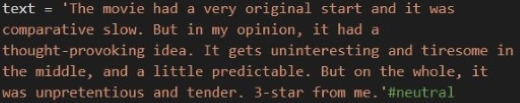
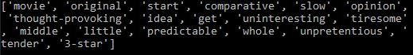
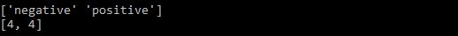
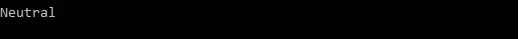

Sentiment Analysis
- Using the results of Text Classification, I aim to predict if the sample text is a positive, negative or neutral movie review.
- Highlights:
- I have selected the resultant model(CNB()) from Text Classification and trained it on a small set of text(sentiment.xlsx).
- Since keywords are the only variable to produce the result(s), I have considered careful preprocessing steps, given the sensitivity of the relation. Hence, I used lemmatization over stemming, as stemming reduces the word extensively like offensive becomes offens, unpretentious becomes unpretenti, and lemmatization reduces to the grammactically accurate root-word.
- The calculation is done on the basis of number of positive and negative keywords and declares if the test-text is positive, negative or neutral.
- Sample Test Text
- Keywords Extracted
- Keyword Label Count
- Result
-
Link to Github:
Sentiment_Analysis
(Note: Scroll to the end of github page.)